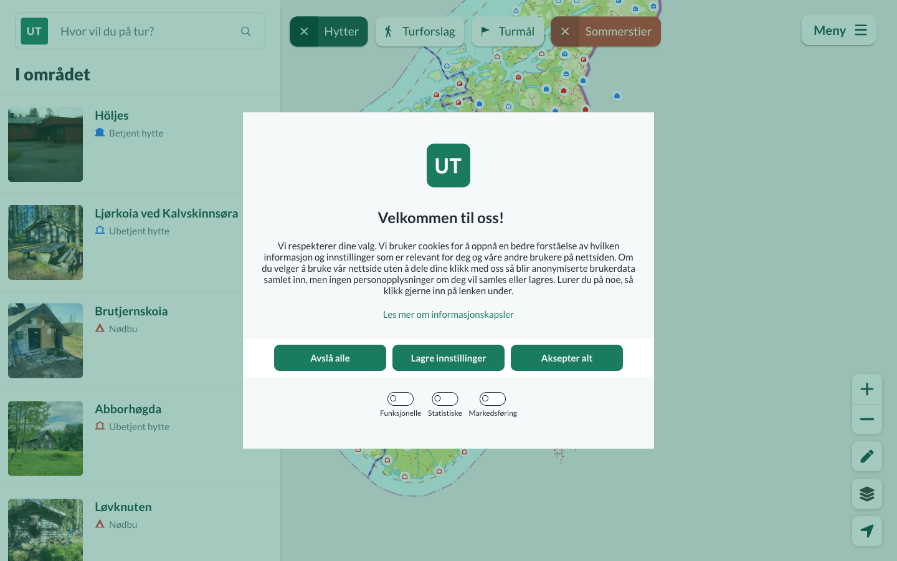
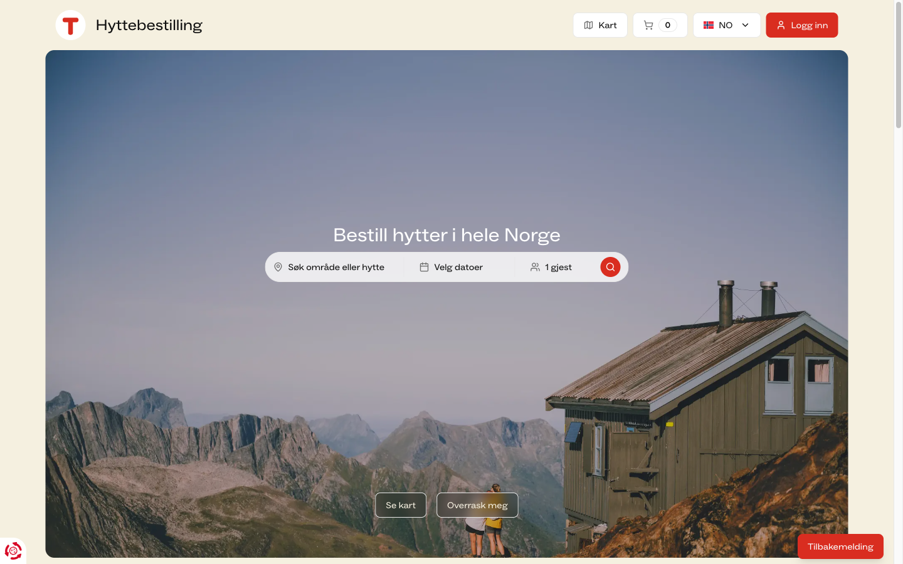
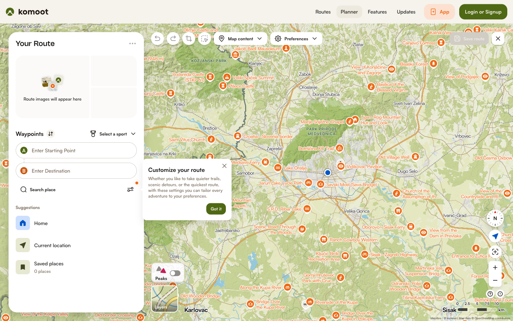
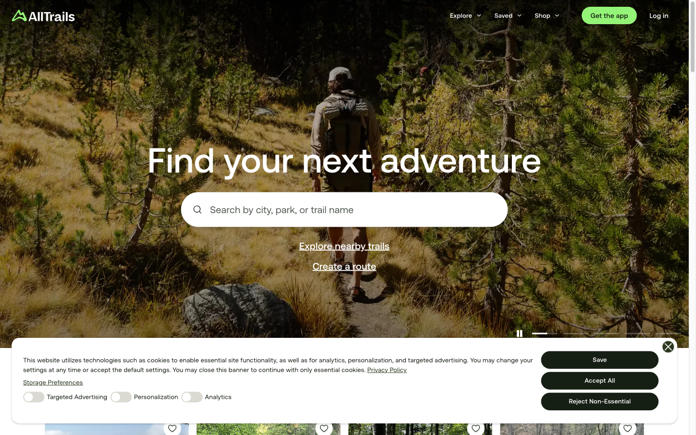
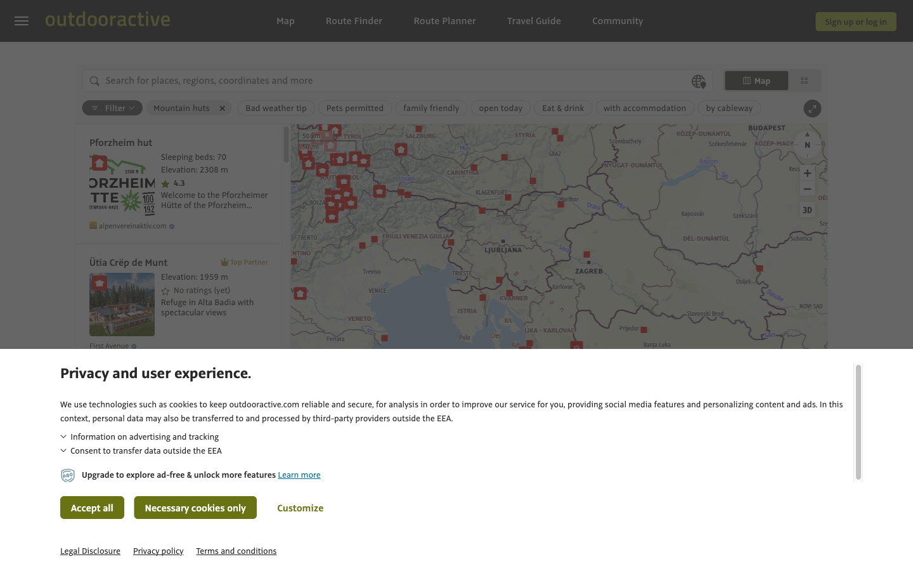

Багатоденний трекінг у Скандинавії ще ніхто не зшив в один AI-потік
Nestwood — AI-orchestration шар для планування маршруту, ночівлі, спорядження й погодної адаптації на офіційних відкритих geodata Норвегії й Швеції (Kartverket, Lantmäteriet, UT.no/DNT) — не власна геобаза, не чуже API з ToS-обмеженнями.
Навіть у найкращому наявному варіанті багатоденний трекінг вимагає від користувача самому бути інтеграційним шаром між щонайменше чотирма розрізненими джерелами — маршрут, ночівля, погода, спорядження — і жоден з 15 перевірених продуктів не закриває це одним потоком.
Про продукт
Самарі пітчу. Google Maps, Komoot і AllTrails у 2026 р. запустили AI-асистентів для планування маршруту — жоден не йде далі одного дня й одного треку. Nestwood бере на вході фіз. підготовку, бюджет, час, наявне спорядження й уподобання, а на виході віддає повний персоналізований multi-day маршрут: дні переходу, прив'язані ночівлі, gear-checklist і адаптацію під прогноз погоди на кожен день.
Бізнес-модель. Не venture — feature-pitch/acquisition-таргет для гравця з дистрибуцією: AllTrails, Komoot, Google Geospatial AI team або DNT/UT.no.
Як ми вирішимо біль
Orchestration-шар за прецедентом Outdooractive↔alpenvereinaktiv — не оператор ночівлі. Три перенесені механізми з deep-dive benchmark'у (multi-provider fallback, named-contributor breakdown, live re-sync). Гід-візард як інтерфейс генерації плану, з видимим поясненням кожного рішення. Деталі — розділи 3 і 4 нижче.
Конкуренти
15 продуктів у трьох групах — Хард (той самий продукт, ринок Скандинавія), Софт (інший продукт, той самий job-to-be-done) і Аспіраційні (міжнародні еталони категорії). Повний розбір по кожному — competitors.md.
| Продукт | Штаб-квартира | Про що він | AI-інтеграція — як виглядає і що робить |
|---|---|---|---|
| Хард — той самий продукт, ринок Скандинавія (критерій групи — де продукт реально використовується, не де компанія зареєстрована) | |||
| UT.no (DNT) | Норвегія | Пошук маршруту + хижі DNT — держ./асоціаційний сайт-планувальник. | Немає |
| STF | Швеція | Мережа гірських хиж на Kungsleden + трекінг. | Немає |
| Komoot | Німеччина | Route-планувальник (піші/вело/біг). | Так — застосунок для ChatGPT: рекомендує маршрут із готової бази 7М маршрутів за текстовим запитом, не генерує нову послідовність. |
| AllTrails | США | Пошук і навігація трейлів, community-каталог. | Так — AI Smart Routing (тар Peak): перебудовує маршрут у реальному часі, якщо стежка закрита чи йде шторм, + розмовний пошук через Claude/ChatGPT. Лише один трек, один день. |
| Outdooractive | Німеччина | Hut-to-hut multi-day route-планувальник, 33 000+ хиж. | Так — White-label AI Assistant, вбудований на сайтах дестинацій-партнерів (напр. Heidiland Tourismus): відповідає на inspiration-питання про дестинацію, не генерує персоналізований план користувача. |
| Софт — інший продукт, та сама базова задача | |||
| Gaia GPS | США | Backcountry-навігація й трек-планування в полі. | Немає |
| PiNCAMP | Швейцарія/Німеччина/Нідерланди | Маркетплейс бронювання кемпінгів (Європа). | Немає |
| WikiCamps | Австралія/Нова Зеландія | Кемпінг-трипланер з бронюванням сайтів. | Немає |
| Wanderlog | США | Загальний трипланер для будь-якого типу подорожі. | Так — генеративний AI-шар над картою: будує itinerary з опису подорожі, але визнаний "менш конкретним" за конкурентів (generic-рекомендації, без вузького grounding). |
| PackPoint | США | Gear-checklist під погоду й тип активності. | Немає — правило-based логіка (погода + тривалість + профіль активності), не AI. |
| Аспіраційні — міжнародні еталони категорії | |||
| onX Backcountry | США | Premium route-builder з 3D-рельєфом і waypoints. | Немає |
| FarOut | США міжнар. покриття не підтверджено | Waypoint-гайди для thru-hiking / бекпекінгу. | Немає |
| DOC Great Walks | Нова Зеландія | Держ. система бронювання хиж/треків. | Немає |
| YAMAP | Японія | Соціальний хайкінг-застосунок з офлайн-GPS. | Немає |
| Google Gemini / Travel Concierge | США | AI travel-агент з grounding на Maps Platform. | Так — це і є продукт: розмовний multi-agent, groundить відповіді через Places API + Search Grounding + MCP-сервер, реагує на "живі" зміни (погода, дорожні умови). |
"Штаб-квартира" ≠ ринок: у Хард-групі лише UT.no і STF — скандинавські компанії; Komoot/AllTrails/Outdooractive — глобальні продукти зі штабом у Німеччині/США, які й формують хард-конкуренцію саме тому, що ними вже реально користується наша аудиторія в Норвегії/Швеції. Джерела по кожному продукту — competitors.md. "AI-інтеграція" тут — conversational/generative AI-шар, не rule-based фільтри чи анкети.
UX-матриця пʼятьох Хард-конкурентів (Крок 4)
| Ось | UT.no (DNT) | STF | Komoot | AllTrails | Outdooractive |
|---|---|---|---|---|---|
| Аудиторія | Норвезькі трекери всіх рівнів; сильний національний бренд-звʼязок (DNT-членство). | Шведські трекери, історично орієнтовані на гірські станції Лапландії (Kungsleden); теж membership-модель. | Глобальна аудиторія піших/вело/бігових маршрутів; Nordic — велика органічна підгрупа. | Наймасовіша аудиторія з усіх пʼяти. | Європейська Alps-first аудиторія, поширюється на Скандинавію через партнерства/білейбл. |
| Основа продукту | Держ./асоціаційна база маршрутів + хиж — DNT сам володіє хижами. | Те саме, вужче: 16 хиж на Kungsleden. | Community-генерований route-граф (7М маршрутів) — не володіє інфраструктурою ночівлі. | Community-review трейл-каталог — не володіє інфраструктурою. | Ліцензована B2B2C платформа (33 000+ хиж) — продає технологію, не володіє хижами. |
| Ключовий механізм | Планування на карті → окремий перехід у booking-домен — два різні застосунки, вручну зшиті користувачем. | Info-сторінки + окремий booking-модуль; ще менш інтегровано, ніж DNT. | Route builder + ручне розбиття на multi-day stages (Premium); нема прив'язки до ночівлі. | Trail search/filter; AI Smart Routing перебудовує маршрут у реальному часі — лише в межах одного дня. | Hut finder з transitions between huts і weather-at-hut — єдиний, хто моделює "маршрут↔хижа", але як фільтр, не агент. |
| Довіра | Максимальна: держ./асоціаційний бренд, дані з першоджерела. | Та ж модель довіри; no-booking-but-guaranteed-floor-space як прояв цієї довіри. | Community-довіра, не інституційна. | Найслабша інституційна довіра: публічна критика SAR-фахівців за "надмірну довіру" до AI. | B2B-довіра; кінцевий користувач бачить чужий бренд (alpenvereinaktiv), не "Outdooractive". |
| Монетизація | Непряма — DNT-членство, UT.no безкоштовна. | Аналогічно — STF-членство зі знижками. | Freemium + Premium-підписка. | Freemium + Peak-підписка (≈$59.99/рік) за AI-фічі. | B2B SaaS/лейбл-контракти — дані не підтверджені |
Джерела для кожного твердження — benchmark.md; скріни живого обходу нижче.
Три спільні патерни ринку
Ніхто не зшиває маршрут і ночівлю в одному AI-потоці
Навіть Outdooractive подає hut-finder як фільтр/карту, не як агента, що сам підбирає ночівлю під денний перехід.
Довіра будується на джерелі даних, а не на AI
Де AI з'являється (AllTrails), це радше викликає підозру (SAR-критика), ніж довіру.
Монетизація завжди відв'язана від AI-шару
Підписка продається за карти/офлайн/фічі або за B2B-ліцензію — пропозиції "AI, що спланує трип" з ціною ще не існує.
Три відмінності
Хто володіє нічлігом
DNT/STF — напряму; Komoot/AllTrails — ніхто; Outdooractive — посередник-технологія.
Ступінь інтеграції маршрут↔ночівля
Від двох окремих застосунків (DNT/STF) до повної відсутності (Komoot/AllTrails) до фільтра-не-агента (Outdooractive).
Модель монетизації
B2C-підписка vs. B2C-членство зі знижкою vs. B2B2C-ліцензування — три структурно різні моделі в одній категорії.
Скріни живого обходу — 2026-08-05
Жоден екран не був за логіном; фінальний крок бронювання хижі (DNT/STF) не перевірявся — доступ обмежений, тестового акаунта немає.










Бенчмарк
Deep-dive benchmark інтеграційного шару (Крок 5) — не outdoor-специфіка, а сам вимір "звести розрізнені джерела в одне рішення", на 5 продуктах поза категорією. Повні критерії й джерела — benchmark.md.
| Продукт | Категорія | Що зводить в один потік |
|---|---|---|
| Monarch Money | Особисті фінанси | Банки, кредитки, інвестиції, пенсійні рахунки, борги — потрійна аггрегація (Plaid+MX+Finicity) з fallback, у net-worth dashboard. |
| Zillow (Zestimate) | Нерухомість | MLS-фіди, дані асесора, публічні реєстри, user-корекції — neural-network модель в один номер вартості. |
| Uber | Мобільність | Геолокація, ETA, доступність водіїв, ціноутворення й оплата — в один потік, live-локація кожні 4с через WebSocket. |
| TurboTax | Податки | W-2/1099 від 100 000+ банків/payroll-провайдерів — автоімпорт в одну декларацію. |
| Oura Ring | Здоровʼя/wearables | Sleep score, HRV vs. 28-денний бейзлайн, RHR, температура, активність — пасивно в одну Readiness-оцінку з видимими контрибʼюторами. |
| Критерій (1–5) | Monarch | Zillow | Uber | TurboTax | Oura |
|---|---|---|---|---|---|
| Широта зведення джерел | 5 | 5 | 4 | 5 | 4 |
| Автоматичність | 5 | 4 | 5 | 4 | 5 |
| Єдина точка рішення | 4 | 5 | 5 | 5 | 5 |
| Реал-тайм синхронізація | 5 | 3 | 5 | 2 | 5 |
| Прозорість джерела | 3 | 2 | 3 | 4 | 4 |
| Стійкість при відмові джерела | 5 | 3 | 3 | 3 | 3 |
| Персоналізація результату | 4 | 2 | 3 | 4 | 5 |
| Час до готового рішення | 4 | 5 | 5 | 3 | 5 |
| Середнє | 4.4 | 3.6 | 4.1 | 3.75 | 4.5 |
Бали — якісне судження автора на основі задокументованих фактів, не зовнішній рейтинг. Zillow найгірший саме на осях довіри (прозорість, персоналізація); Oura найкращий загалом.
Топ-3 механізми для MVP
Multi-provider fallback
Жодне з трьох офіційних джерел (Kartverket/Lantmäteriet/UT.no) не має ламати весь план при відмові одного — план деградує гарно.
Named-contributor breakdown
Кожен день плану показує, чому він такий — фіз.підготовка→довжина, погода→gear, рельєф→хижа — а не непрозоре "AI пропонує".
Live re-sync
Коли прогноз погоди змінюється, план тихо перевіряється й позначає, що переглянути — не перегенеровується з нуля.
Не спрацює Zillow Zestimate
Непрозорий AI-номер без per-source attribution, поданий з упевненістю навіть на потенційно застарілих даних. Перенесення цього паттерна повторило б слабкість, за яку AllTrails уже отримав публічну критику SAR — пряма загроза головній перевазі Nestwood (офіційний, простежуваний grounding).
Патерни
Пʼять принципово різних UX-патернів планування multi-day відпустки з палатками (Крок 6). Повний розбір — patterns.md.
- Де
- Google Gemini/Travel Concierge, komoot for ChatGPT, AllTrails+Claude.
- Підходить
- Коли обмеження розмиті/складно формалізувати; важлива можливість "переговорити" план.
- Ламається
- Коли потрібна точність, що впливає на безпеку — саме за це SAR критикували AllTrails; складно аудитивно перевірити після генерації.
- Де
- TurboTax interview-flow, PackPoint trip setup, Roadtrippers Autopilot.
- Підходить
- Коли вхідна схема добре визначена й скінченна — наш case: фіз. підготовка/бюджет/час/спорядження/уподобання вже названі в CLAUDE.md.
- Ламається
- Не масштабується на нетипові побажання; результат generic, якщо розгалуження недостатньо глибоке.
- Де
- Komoot route planner, onX Backcountry Route Builder, CalTopo.
- Підходить
- Коли користувач уже знає географію й хоче повний контроль; power-users.
- Ламається
- Нічого не знімає з інтеграційного болю — сам механізм вимагає, щоб користувач вручну звів маршрут+хижу+спорядження.
- Де
- FarOut, bikepacking.com.
- Підходить
- На добре "натоптаних" маршрутах, де хороший план уже відомий (напр. Kungsleden).
- Ламається
- Не персоналізується під унікальні обмеження; ламається саме там, де перевага Nestwood — на маршрутах без людського гайду.
- Де
- The Dyrt Trip Planner (кастомізація за авто/маршрутом).
- Підходить
- Коли користувач хоче досліджувати компроміси інтерактивно; обчислення дешеве й миттєве.
- Ламається
- Хижа-прив'язка+terrain-темп+gear-список технічно важчі для живого рекомпʼюту, ніж маршрут за типом авто.
Обрано Гід-візард — з трьох причин
- CLAUDE.md уже описує фіксовану, скінченну вхідну схему — пряма мапа на структуру візарда, без потреби вигадувати відкритий діалог.
- Пітч-аудиторія вимагає детермінованого, повторюваного демо. Розмовний агент ризикованіший саме перед AllTrails, який уже публічно "спалився" на непередбачуваності AI-виводу.
- Візард напряму підтримує named-contributor breakdown (механізм Oura): кожне поле форми — видимий, іменований драйвер рішення в результаті.
Другий, за умови X Розмовний агент
За умови, що grounding на офіційних даних стане достатньо надійним і покриє весь регіон, а не лишиться мок-шаром прототипу. Стане сильним доповненням пізніше — особливо для пітчу Google (Gemini/Travel Concierge — наш архітектурний референс).
Не підходить Пряма маніпуляція на карті
Структурно протилежне до того, що Nestwood обіцяє: canvas-паттерн вимагає, щоб користувач сам був інтеграційним шаром. Це територія Komoot і onX Backcountry — обирати цей патерн means конкурувати з ними на їхньому полі.
Висновки
Для кожної прогалини — гіпотеза й розділ вище, з якого вона випливає.
| # | Прогалина | Гіпотеза | Звідки випливає |
|---|---|---|---|
| 1 | Ніхто не зшиває маршрут+ночівлю+gear+погоду в одному AI-потоці. | Orchestration-шар, що генерує всі чотири елементи одним поясненим планом, сприймуть acquisition-таргети як конкретно новий продукт, не варіацію існуючого. | §1 Біль, §2 Конкуренти (патерн 1) |
| 2 | Там, де AI уже є (Komoot, AllTrails, Wanderlog, Outdooractive), він рекомендує з бази, обмежений одним днем, або про контент дестинації. | Гід-візард з generative-виходом, grounded на офіційних Nordic-даних, займе саме цю незайняту AI-generation-нішу. | §2 Конкуренти |
| 3 | Довіра до AI-рекомендацій крихка — AllTrails отримав публічну критику SAR за "надмірну довіру". | Видима, іменована прив'язка кожного елементу плану до офіційного джерела дозволить уникнути тієї ж критики й обжене crowd-grounded конкурентів на довірі. | §3 Бенчмарк (мех. №2), §2 Довіра |
| 4 | Бронювання хиж DNT/STF частково не онлайн (операційний бар'єр). | Явний guidance-шар (офіційна формула гарантії ночівлі + action-картка) із multi-provider-fallback знімає блокер без потреби ставати оператором бронювання. | §2 Ключовий механізм, §3 мех. №1 |
| 5 | Бізнес-модель невизначена між B2C-підпискою й B2B2C-ліцензією. | B2B2C-ліцензія нац. асоціації (прецедент Outdooractive↔alpenvereinaktiv) — менш ризикований, уже перевірений у цій категорії шлях; потребує валідації контактом з DNT/UT.no. | §2 Монетизація |
| 6 | Розмовний AI-інтерфейс несе ризик "надмірної довіри" перед аудиторією, що вже критикувала цей паттерн. | Гід-візард безпечніший для живого демо на поточній стадії (мок-дані); розмовний шар виправданий лише після повного live-grounding. | §4 Патерни |